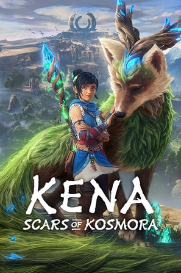
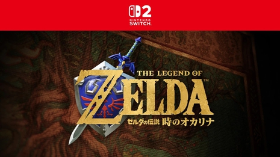
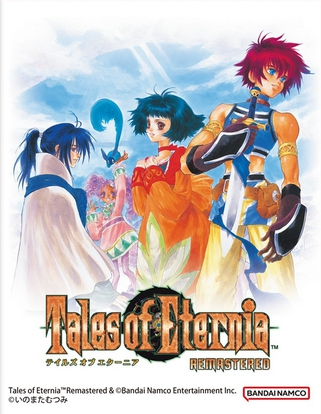
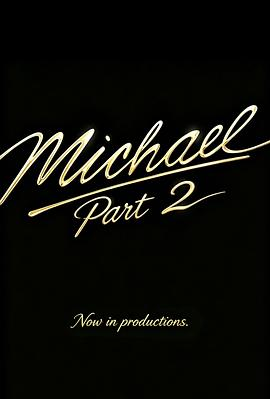

2026年7月 23 条
2026-07-31 18:23:30
想读 在这世界的角落
为什么电影条目被删了？？？https://douc.cc/14SjiJ
2026-07-30 06:04:23
2026-07-26 12:34:00
想看 八仙！
2026-07-24 06:39:54
动画集数也太多了吧
2026-07-20 07:38:14
2026-07-20 07:10:53
2026-07-20 07:04:01

第一部还在桌面上躺着，先来标记一下第二部
2026-07-20 07:03:29

2026-07-19 20:39:32
看过 重返寂静岭 / Return to Silent Hill ★★☆☆☆
这讲的是个啥故事真是没搞懂。本来以为和前面两部一样是一个人两个魂，结果莫名其妙的。可能唯一的好的就是没有jump scare，都是氛围恐怖，虽然这次也没有很恐怖。
2026-07-19 20:36:31
 在看 二十世纪电气目录 / 二十世紀電氣目録-ユーレカ・エヴリカ- ★★★★★
在看 二十世纪电气目录 / 二十世紀電氣目録-ユーレカ・エヴリカ- ★★★★★
看完了两集，真的是奇幻，op像海猫鸣泣之时，ed太特别了想不出来像啥。画风还是原汁原味的京阿尼，期待后续！
2026-07-19 19:18:39
玩过 莱莎的炼金工房3：终结之炼金术士与秘密钥匙 ライザのアトリエ3 ~終わりの錬金術士と秘密の鍵~ ★★★☆☆
3年下来，还是决定弃坑啦。角色设定非常好，但是慢节奏的养成游戏我有点吃不消了，开挂的话又会索然无味。 //前面一部都没玩过，来入坑试试。画面在JRPG里面算不错的了，操作感觉有带你蹩手，不知道是手残还是游戏操作感就是不强。
2026-07-18 15:41:45

2026-07-18 12:44:56
想看 “骗骗”喜欢你
能上6分我觉得都是国产好片
2026-07-16 15:58:58
2026-07-14 16:46:07
想看 公寓黑风暴 / 아파트
2026-07-13 07:36:53
看过 穿普拉达的女王2 / The Devil Wears Prada 2 ★★★★☆
原来是中年失业啊，没想到20年就这么过去了，时间真是飞快。剧情和演出都中规中矩了，算是个合格的续作吧，没啥太多想说的，毕竟分了三段看完，有娃后看电影都是分段看😅 //不知道会怎么拍啊，都已经找回自我了
2026-07-07 20:32:53
看过 窗外是蓝星 ★★★☆☆
很不错的主意，把工作变成了大电影拍出来。可惜内容单调了一些~
2026-07-05 10:24:26

我就说怎么没头没尾的，原来是还有第二部。。。。。。传记电影还能来个第二部，也是牛
2026-07-05 10:22:53
看过 迈克尔·杰克逊：巨星之路 / Michael ★★★★☆
看完musical再来看电影，感觉musical更有感染力啊。电影还行，但是总是不自觉地和《Bohemian Rhapsody》对比起来，小巫见大巫了，这个电影还可以更精彩些。
2026-07-04 05:39:45
2026-07-03 15:32:58
看过 寂静岭2 / Silent Hill: Revelation ★★★☆☆
somehow我先看了这一部，看完之后发现背景介绍确实有点少，但是设定非常猎奇，看完第一部才知道原来是延续之前的设定，也有些没有延续的，比如化成灰燃烧的人、吃人虫子之类的。总体来说没有第一部精彩，但是还可以，我比较喜欢这种氛围恐怖的类型
2026-07-03 15:29:45
看过 寂静岭 / Silent Hill ★★★★☆
久仰大名，因为最近除了重返寂静岭的续集才想起来补一下。看了一下确实是很有新意的恐怖作品，气氛恐怖片，而非一堆jump scare的那种。在目前看来很多CG已经没有那么吓人了，甚至有点出戏，但是在当年肯定是非常精彩的。设定让我想起来之前玩的《The Medium》，原来早在2006年就已经在寂静岭里面有类似的感觉了。
2026-07-03 15:25:13
在玩 节奏天国：奇迹之星 リズム天国 ミラクルスターズ ★★★★★
7月2号首发玩起了，非常不错！ //终于等到了，可惜是switch的终章